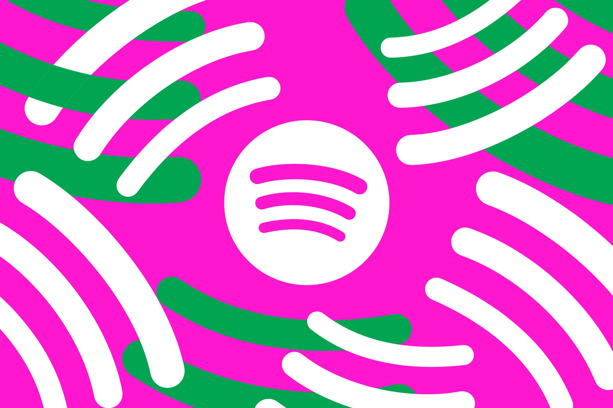

Spotify отчиталась о годе борьбы с ИИ-шумом: из персонализированных рекомендаций за это время выведено более 50 миллионов треков, обозначенных как «slop and spam» — низкопробный контент, сгенерированный ИИ пачками. Это отдельно от прежних 75 миллионов спам-треков, которые платформа удалила совсем за серьёзные или повторные нарушения правил. Приубрать, впрочем, стоит формулировку: «слоп» остался доступен — просто слушателю теперь нужно самому его искать, алгоритм его не подкинет.
В компании говорят, что паттерн выявился из самих слушательских привычек: треки, которые массово пропускали или скрывали, почти всегда оказывались ИИ-конвейером. Последние полгода Spotify точечно дорабатывала систему рекомендаций, чтобы реже показывать такой шум и чаще — музыку «аутентичных человеческих артистов». Для отбора используют связку сигналов: реакцию слушателей и их обратную связь, паттерны загрузок, метаданные и сторонние инструменты ИИ-детекции. Редакторы платформы держат тот же стандарт и такой контент в подборки не ставят. По словам Spotify, жалоб на «слоп» в рекомендациях стало заметно меньше.
Полностью запрещать ИИ-музыку Spotify не стала — вместо этого летом появился значок «AI Persona» для артистов-выдумок, и такая музыка не попадает в рекомендации. Другие игроки действуют строже: YouTube Music вешает маркировки на ИИ-треки, Deezer дал пользователям тумблер для фильтрации «слопа», а Bandcamp запретил ИИ-музыку целиком. Параллельно Spotify со студией Universal Music Group и издателем Believe запускает инструмент для легальных ИИ-ремиксов — то есть отделяет «грязный» спам от лицензионных экспериментов.
Цифра в 50 миллионов — самый крупный на сегодня публичный отчёт о масштабах ИИ-засора в музыке. Он показывает и обратную сторону дешёвой генерации: индустрия отвечает не запретами моделей, а экономикой внимания — без рекомендаций автоматический контент теряет главный источник прослушиваний и доходов.